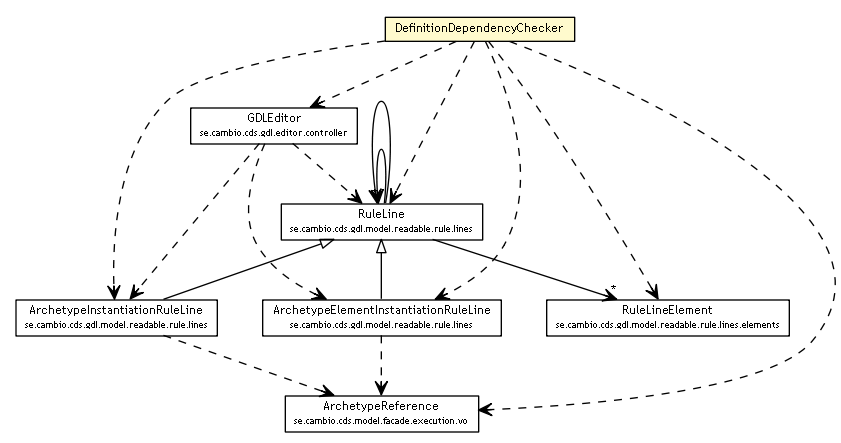

se.cambio.cds.gdl.editor.util
Class DefinitionDependencyChecker

java.lang.Object
 se.cambio.cds.gdl.editor.util.DefinitionDependencyChecker
se.cambio.cds.gdl.editor.util.DefinitionDependencyChecker
public class DefinitionDependencyChecker
- extends Object
| Methods inherited from class java.lang.Object |
clone, equals, finalize, getClass, hashCode, notify, notifyAll, toString, wait, wait, wait |
DefinitionDependencyChecker
public DefinitionDependencyChecker()
isBeingUsed
public static boolean isBeingUsed(ArchetypeInstantiationRuleLine airl,
GDLEditor controller)
- Checks if the definition of a Archetype Reference is used inside any rule line (preconditions, conditions or actions)
- Parameters:
airl - controller -
- Returns:
- true is the reference is beign used
isBeingUsed
public static boolean isBeingUsed(ArchetypeElementInstantiationRuleLine aeirl,
GDLEditor controller)
- Checks if the definition of an Archetype Element is used inside any rule line (preconditions, conditions or actions)
- Parameters:
aeirl - controller -
- Returns:
- if the archetype element is being used being used in the guide
isBeingUsedInAction
public static boolean isBeingUsedInAction(ArchetypeInstantiationRuleLine airl,
GDLEditor controller)
- Checks if the definition of a Archetype Reference is used inside any rule line on an action
- Parameters:
airl - controller -
- Returns:
- if the archetype instance is being used being used in the guide
Copyright © 2013 Cambio. All Rights Reserved.